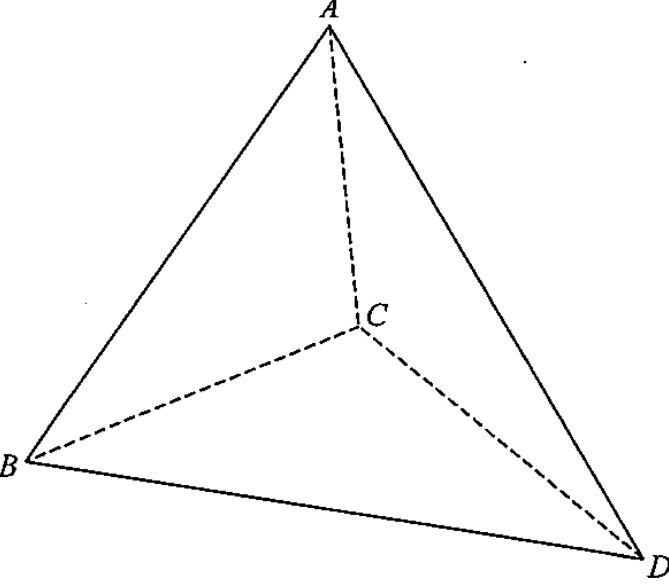

Applicable triangle \(ABD\): known \(AB=10\), \(BD=15\), \(\angle BAD=86^\circ\).
$$\frac{AB}{\sin\angle ADB}=\frac{BD}{\sin\angle BAD}$$ $$\frac{10}{\sin\angle ADB}=\frac{15}{\sin 86^\circ}$$ $$\sin\angle ADB = \frac{10\sin 86^\circ}{15}\approx 0.6650$$ $$\angle ADB \approx 41.6851^\circ \quad \text{or} \quad 138.3149^\circ\ (\text{rejected})$$Rejecting the obtuse value (since \(\angle ABD\) must remain positive):
$$\angle ABD = 180^\circ - 86^\circ - 41.6851^\circ \approx 52.3149^\circ$$In \(\triangle BCD\): \(BC = 8\), \(BD = 15\), \(\angle CBD = 43^\circ\).
$$CD^{2}=BC^{2}+BD^{2}-2(BC)(BD)\cos\angle CBD$$ $$CD^{2}=8^{2}+15^{2}-2(8)(15)\cos 43^\circ$$ $$CD^{2}\approx 64 + 225 - 240(0.73135) \approx 113.476$$ $$CD \approx 10.65247$$Checking triangle \(ABC\) with sides \(AC=6\), \(BC=8\), \(AB=10\):
$$AC^{2}+BC^{2}=6^{2}+8^{2}=36+64=100=AB^{2}$$Hence \(\triangle ABC\) is right-angled at \(C\):
$$\angle ACB = 90^\circ$$With \(AB=10\), \(BD=15\), \(\angle ABD \approx 52.3149^\circ\):
$$AD^{2}=AB^{2}+BD^{2}-2(AB)(BD)\cos\angle ABD$$ $$AD^{2}\approx 10^{2}+15^{2}-2(10)(15)\cos 52.3149^\circ$$ $$AD^{2}\approx 100 + 225 - 300(0.61147) \approx 141.559$$ $$AD \approx 11.8990 \approx 11.8996$$With \(AC=6\), \(CD\approx 10.65247\), \(AD\approx 11.8996\):
$$\cos\angle ACD = \frac{AC^{2}+CD^{2}-AD^{2}}{2(AC)(CD)}$$ $$\cos\angle ACD \approx \frac{6^{2} + 10.65247^{2} - 11.8996^{2}}{2(6)(10.65247)}$$ $$\cos\angle ACD \approx \frac{36 + 113.476 - 141.600}{127.830} \approx 0.0616$$ $$\angle ACD \approx 86.47^\circ$$Since \(\angle ACD \neq 90^\circ\), \(AC\) is not perpendicular to \(CD\).
The angle between line \(AB\) and plane \(BCD\) is not simply \(\angle ABC\).
In fact, \(\angle ACB = 90^\circ\) only shows \(AC \perp BC\), but the foot of the perpendicular from \(A\) onto plane \(BCD\) is not \(C\) because \(AC\) is not perpendicular to \(CD\) (and hence not perpendicular to the plane \(BCD\)).
Therefore the angle between \(AB\) and face \(BCD\) is not \(\angle ABC\).